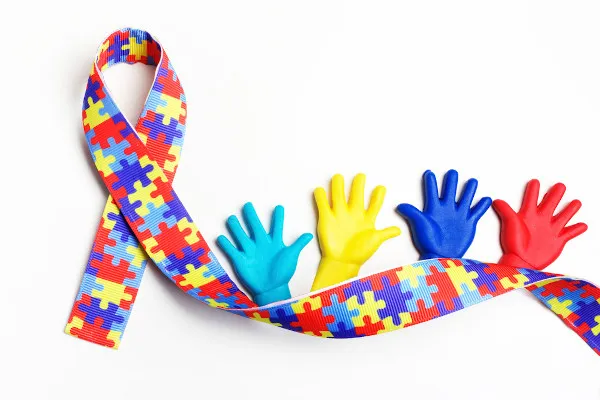

Formas de celebrar com respeito e visibilidade

O Dia do Orgulho Autista é uma oportunidade para incentivar a inclusão, a escuta ativa e a valorização da neurodiversidade. A seguir, algumas formas de participar dessa celebração de maneira consciente:
- Compartilhar conteúdos produzidos por pessoas autistas nas redes sociais.
- Divulgar o significado do símbolo do infinito colorido e sua relação com a diversidade.
- Participar ou organizar rodas de conversa sobre inclusão e neurodiversidade.
- Utilizar elementos visuais que representem o orgulho autista, como cores e símbolos.
- Valorizar e escutar relatos e experiências de pessoas autistas, presencialmente ou online.
Sugestão de atividade
Uma forma simples de promover a inclusão é criar um mural com desenhos, frases ou depoimentos de pessoas autistas na escola ou na comunidade. Essa iniciativa contribui para dar visibilidade às experiências e fortalecer o respeito às diferenças.